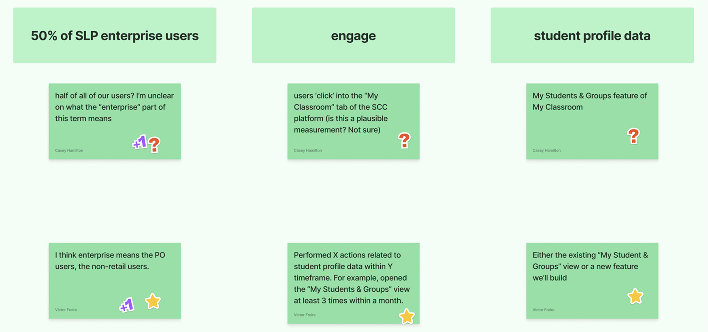
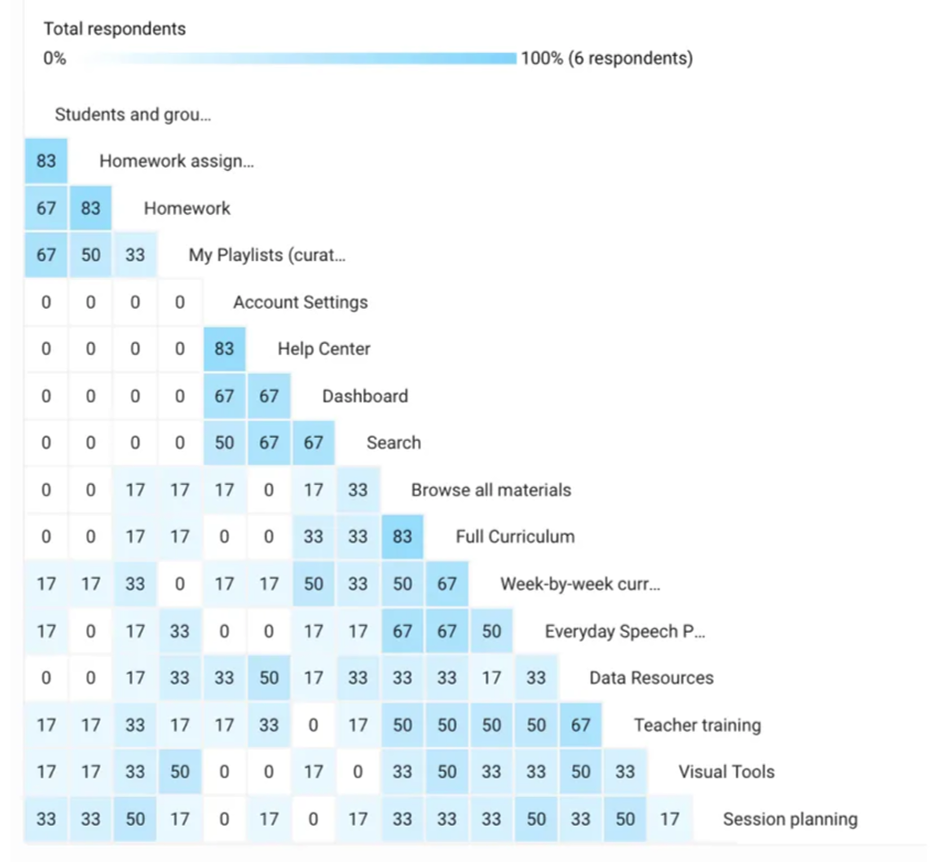
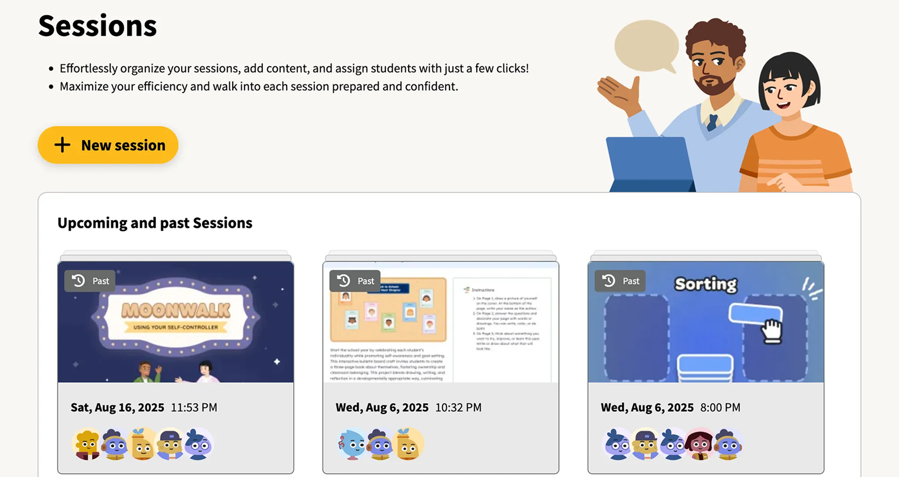

The product couldn't expand because collaboration was impossible
Our product couldn't expand across schools because it lacked the foundations for multi-educator collaboration on student instruction. Teachers were patching together their own systems — treating the platform as a content library rather than a facilitator of their core jobs.
No way to document student progress, share notes, or coordinate within the platform — educators relied entirely on external tools.
Without robust student profiles and progress data, we couldn't convince school administrators — our buyers — to purchase or renew.
Supporting students with complex needs requires a team, but the product made data sharing nearly impossible across educators.
The product was experienced as a content library, rather than a facilitator of the jobs educators needed done day-to-day.
Educators experienced the platform mainly as a content library, rather than a facilitator of their core jobs.
Make student data visible, useful, and shareable
Build the foundations of a student profile and create features that give educators a single place to plan, document, and collaborate around student instruction.
Measurable goal
Get 50% of enterprise users actively engaging with student profile data.
How we got there
Before building anything we needed to align the team on what was actually broken and why. We combined product analytics, stakeholder interviews, and an audit of how educators were working around us.
We ran in-depth interviews to understand educators' daily workflows, collaboration habits, and the barriers stopping them from using existing student features.
Blockers to adoption:
Collaboration habits happening outside the product:
- Taking shared notes about students and groups
- Exchanging content recommendations and materials
- Updating each other on content used to avoid overlaps
- Making joint decisions on student support levels
We ran ideation workshops and scored opportunities using an Impact × Confidence × Ease framework to separate signal from noise and identify where to start.
| Feature | Score | Impact |
|---|---|---|
| Document storage within student profiles | 144 | |
| Social skills report based on content watched | 140 | |
| Written notes about a student or group started here | 108 | |
| Share Playlists with colleagues started here | 84 | |
| Assigning content to be watched for a specific lesson | 72 |
Sharing playlists with colleagues: on the left, the modal educators use to share a playlist directly with a colleague; on the right, the invitation email their colleague receives — which lets them browse content even without a licence and creates a warm sign-up path for non-users who aren't yet part of the school's network.
Our first design push focused on making existing student profiles far more useful, surfacing progress data clearly and giving educators a reason to return. The redesign addressed a range of accessibility and UI issues: cards became easier to interact with, core actions were more prominent, and browsing through students was faster. We also introduced avatars that reflect our brand — adding a touch of playfulness to an otherwise functional interface.
We used object-oriented UX to map the relationships between concepts in the product — students, sessions, content, goals — and identified Notes as a connective tissue that could bridge them all.
User testing the prototype revealed important nuances:
- Educators wanted to assign goals to notes, reflecting how they work on IEP cases
- Session notes needed to be dated to track history over time
- Attaching materials to notes would help with reporting on what was done and planning future lessons
Which led us to pivot — see below.
Testing revealed that what educators truly needed wasn't just notes — it was a structured way to plan and document an entire session: the student, the goal, the content, and the outcome.
We pivoted from a standalone Notes feature to a Sessions feature that elegantly brought all of these workflows together in one place:
A card sorting exercise validated the direction: Sessions fit intuitively alongside our existing Playlists, Homework, and Student Profiles features — forming a coherent "My Toolkit" mental model for educators.
Before investing in full development, we ran a fake door test to measure genuine interest and limit frustration from over-promising. The signal gave us confidence to proceed.
After iterating through three more rounds of user testing, we shipped Sessions — a unified session planning and documentation tool that gave educators everything they needed in one place.
